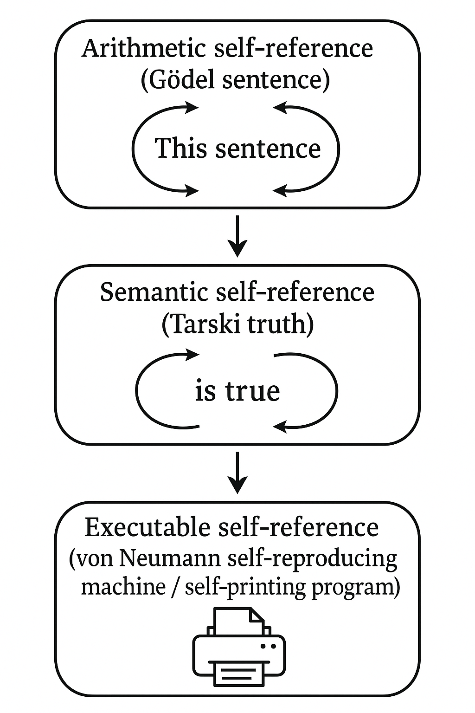
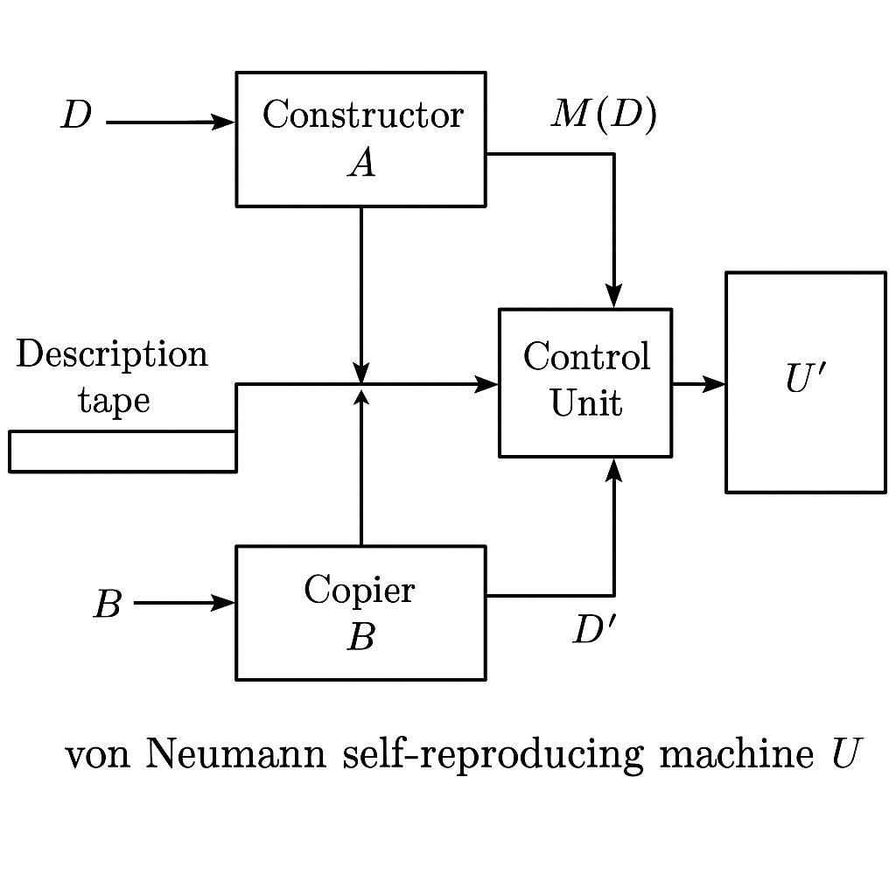
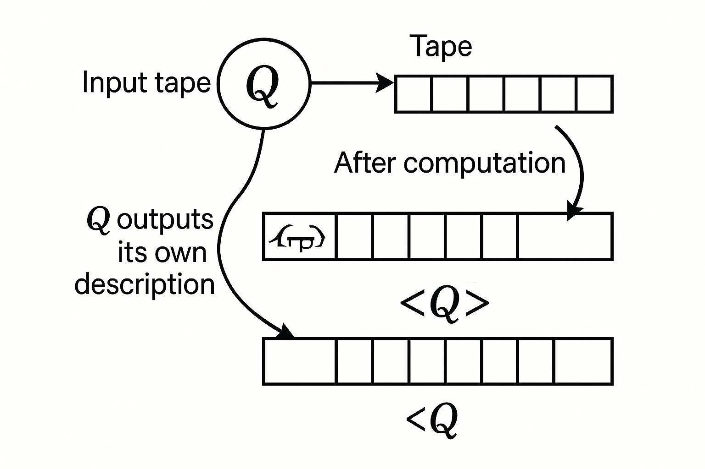
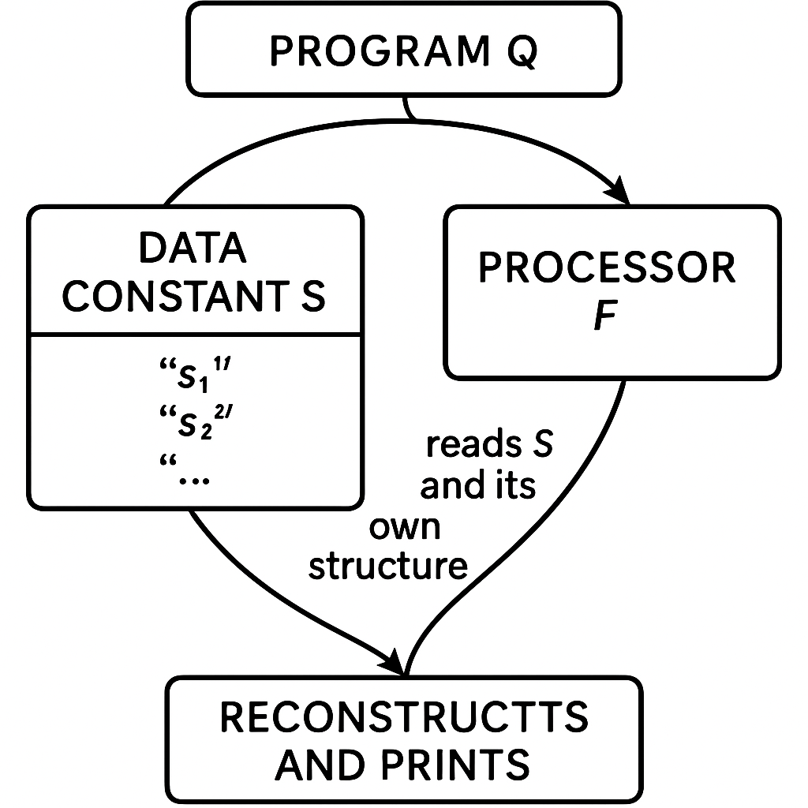
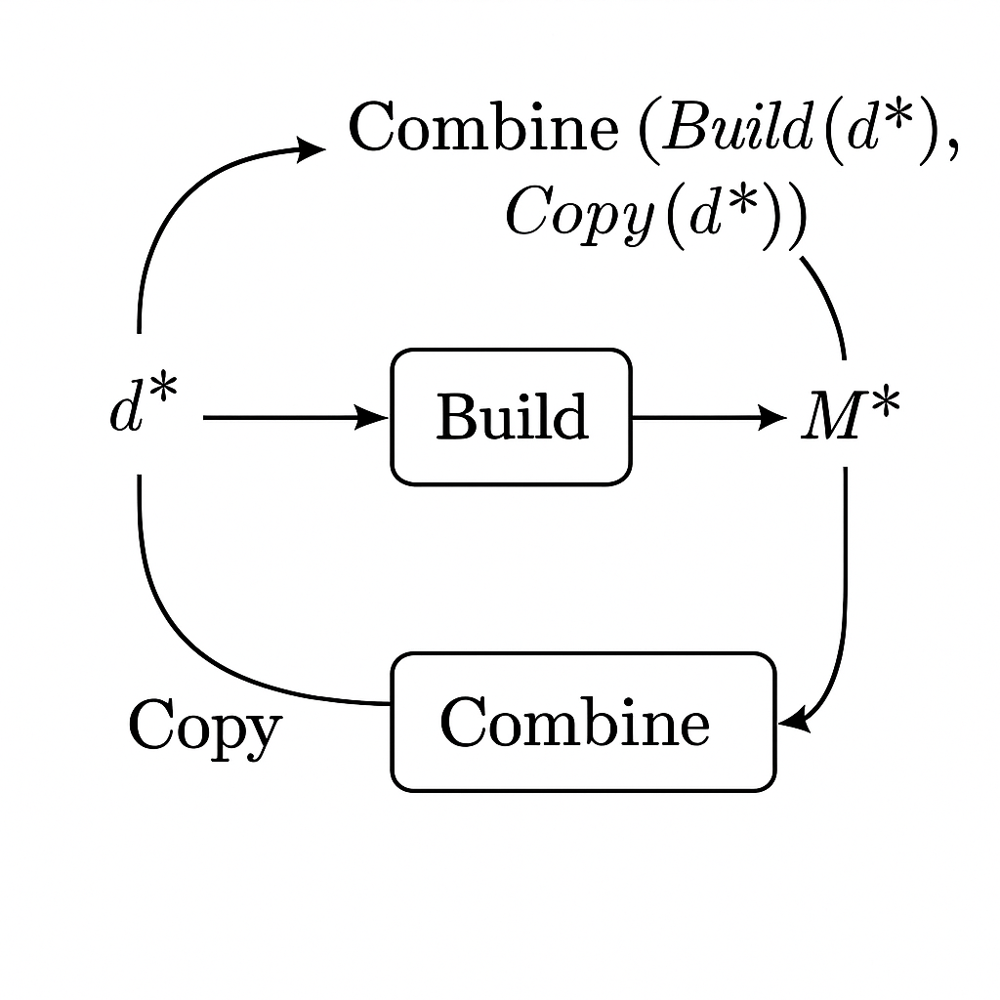
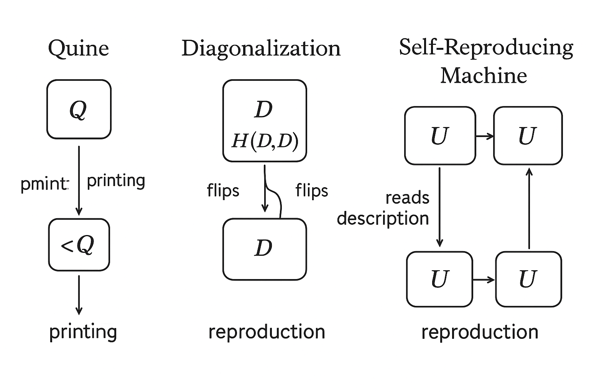
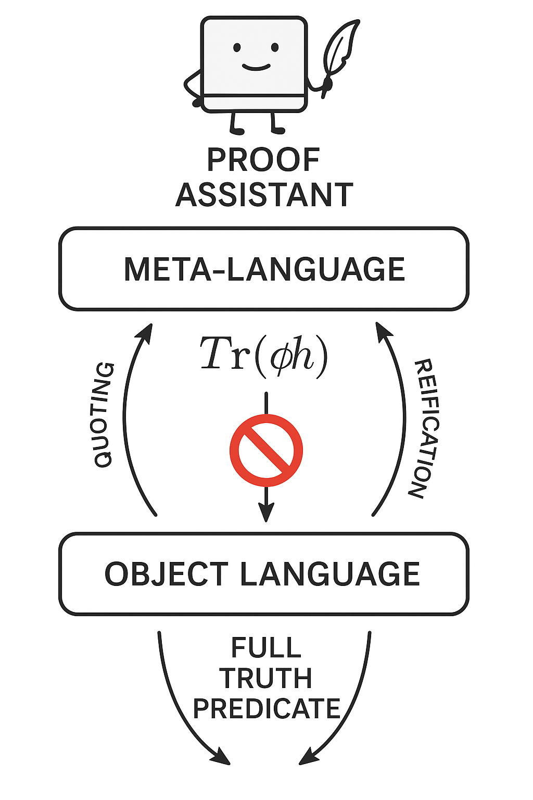
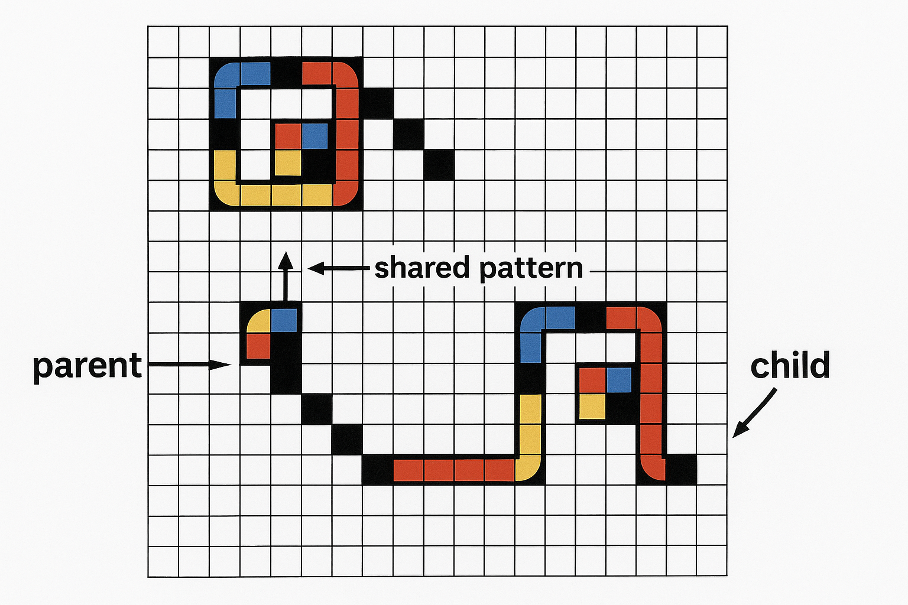
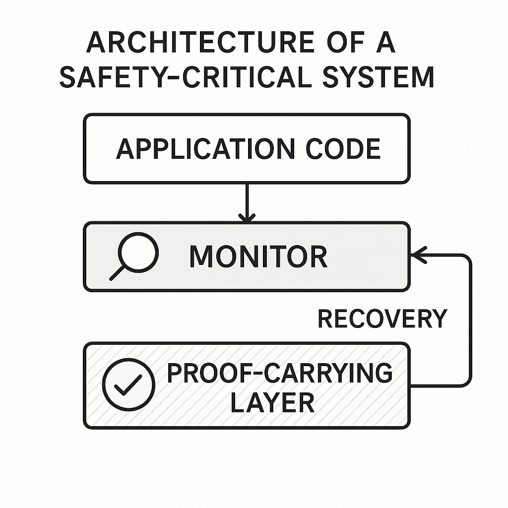
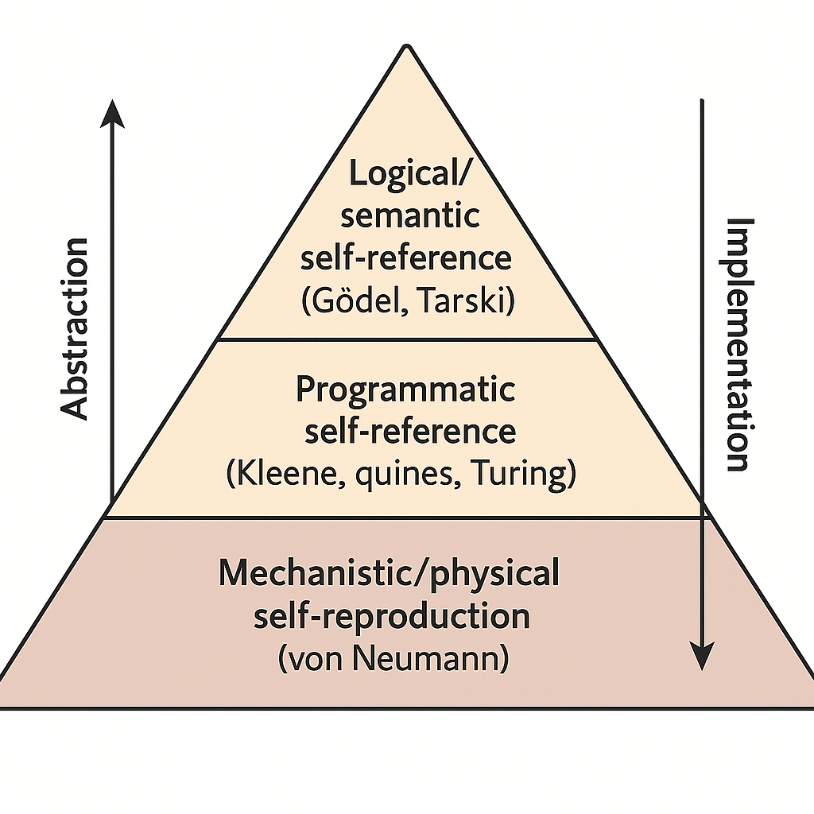

第 4 講：自指邏輯主題 4 —— von Neumann 自複製機、程式自指與當代發展
本講從「數學自指」拓展到「計算與機器自指」，以 von Neumann 自複製機為核心，結合圖靈可計算性、Gödel 編碼與程式自指，進一步說明自指邏輯在計算機科學、形式系統與物理實作中的角色。最後會探討當前在自指邏輯、反省型系統與安全機制上的延伸發展。
4.1 從 Gödel 自指到「可執行」自指：概觀
前面幾講我們已經看到：
- Gödel 透過 數學自指（自我指涉的算術句子）建立不完備性定理。
- Tarski 透過 語意自指（語言談論自身真值）得到不可定義性與不可判定性定理。
本講的關鍵轉折是：把自指變成「可執行的物件」。
- 在計算理論中，這種「可執行自指」典型地以 程式拿到自己的程式碼（quines、反射式直譯器等）出現。
- 在物理或機械模型中，von Neumann 的 自複製機就是一個經典例子：一個機器接受一份「藍圖」，然後複製出一個攜帶同一份藍圖的機器。
這背後其實都在實現同一種結構：
- 一個系統 \(S\) 能夠
- 把某段「描述自身」的資訊作為輸入；
- 並在運行過程中 動態地 讀取／操作這份描述。
我們會從 von Neumann 的自複製機出發，然後用 圖靈機形式化，最後連回先前的 Gödel 與 Tarski 結構，並說明當代理論與應用發展。

圖 4-1: A conceptual diagram showing three layers: (1) arithmetic self-reference (Gödel sentence), (2) semantic self-reference (Tarski truth), (3) executable self-reference (von Neumann self-reproducing machine / self-printing program). Arrows illustrate shared fixed-point/self-reference structure between the layers.
Prompt: A conceptual diagram showing three layers: (1) arithmetic self-reference (Gödel sentence), (2) semantic self-reference (Tarski truth), (3) executable self-reference (von Neumann self-reproducing machine / self-printing program). Arrows illustrate shared fixed-point/self-reference structure between the layers.
4.2 von Neumann 自複製機的基本結構
4.2.1 整體構想與組件分解
von Neumann 在研究「能否有一個機械系統，在固定的物理定律下，自行製造一個與自身同構的副本？」時，提出了在「細胞自動機」框架中的自複製機構想。雖然最終模型極為龐大（數萬細胞），但其 邏輯結構 可以抽象成幾個核心模組：
- 描述帶（Instruction Tape）：一串符號序列 \(D\)，描述如何建造某機器。
- 建造器（Constructor）：一個機械系統 \(A\)，能根據描述 \(D\)「組裝」出對應的機器 \(M(D)\)。
- 複製器（Copier）：一個系統 \(B\)，能複製描述帶 \(D\) 本身，產生 \(D'\)。
- 控制單元（Control Unit）：協調 \(A\) 與 \(B\) 的運作，確保先造出機器，再附上描述，最後達成交配合條件。
抽象表示：
- 給定描述 \(D\)，建造器 \(A\) 產出機器
\[
M(D) = A(D).
\]
- 複製器 \(B\) 產出描述複本
\[
D' = B(D).
\]
- 整個機器 \(U\)（包含 \(A,B,\) 控制單元，以及描述 \(D_U\)）如果要 自複製，就必須滿足：
\[
U(D_U) = U + D_U,
\]
也就是：用 \(D_U\) 去驅動建造器和複製器，結果得到另一份具備相同結構與描述的機器。

圖 4-4: Block diagram: A description tape D feeding into two components: a Constructor A and a Copier B. Constructor A outputs a machine M(D). Copier B outputs a copied tape D'. Then a Control Unit wires M(D) and D' together to form a new composite system U'. The whole diagram is labeled as von Neumann self-reproducing machine U.
Prompt: Block diagram: A description tape D feeding into two components: a Constructor A and a Copier B. Constructor A outputs a machine M(D). Copier B outputs a copied tape D'. Then a Control Unit wires M(D) and D' together to form a new composite system U'. The whole diagram is labeled as von Neumann self-reproducing machine U.
4.2.2 抽象數學表示：組成函數與固定點
先不管物理細節，我們以更數學化的方式表示 von Neumann 自複製的邏輯：
- 令 \(\mathcal{M}\) 為所有「機器（機制配置）」的集合。
- 令 \(\Sigma^\ast\) 為所有有限字串的集合（描述帶）。
- 有一個「建造函數」
\[
C : \Sigma^\ast \to \mathcal{M},
\]
對每個描述 \(D\) 給出一個機器 \(C(D)\)。
- 有一個「複製函數」
\[
R : \Sigma^\ast \to \Sigma^\ast,
\]
可被實作為一台機器（或機器的一部分），複製輸入描述。
一個「攜帶描述的組合機器」可以寫成有序對：
\[
U = \big( M, D \big),
\]
其中 \(M \in \mathcal{M}\) 是具體的機械結構，\(D \in \Sigma^\ast\) 是附帶其上的描述帶。
「自複製」可以形式化為：存在某個有序對
\[
U^\ast = \big( M^\ast, D^\ast \big)
\]
使得當 \(U^\ast\) 啟動後，它「建造出」另一個與自身同構的有序對
\[
U^\ast \to \big( M^\ast, D^\ast \big).
\]
這種結構在邏輯上就是一種 固定點（fixed point）：某個物件 \(x\) 透過某個轉換 \(F\) 回到自身 \(F(x) = x\)。在自複製機構造中，轉換 \(F\) 是「以描述 \(D\) 操作機器 \(M\) 再組回成一個新機器」；固定點 \(x\) 則是一個能重現自身的組合。
4.3 用圖靈機重述 von Neumann 自複製
4.3.1 圖靈機模型與編碼
我們用圖靈機語言來刻畫 von Neumann 的邏輯。令：
- \(\mathcal{P}\) 為所有圖靈機程式（或狀態表）的集合。
- 對每個程式 \(P \in \mathcal{P}\)，有其編碼 \( \langle P \rangle \in \Sigma^\ast \)。
- 反之，每個字串 \(s \in \Sigma^\ast\) 若是合法編碼，就代表某程式 \(P_s\)。
我們想要一個圖靈機（或程式）\(Q\) 滿足：
- 輸入為空，輸出一個 完整的自身程式碼 \( \langle Q \rangle \)。
這就是所謂的 quine（自印程式），其運作邏輯與「程式級」的自複製機非常接近。von Neumann 的機械版自複製，其抽象結構與 quine 幾乎同構。

. Arrows emphasize that Q outputs its own description.">
圖 4-9: Illustration of a Turing machine labeled Q with an empty input tape. After computation, the tape contains the exact description string . Arrows emphasize that Q outputs its own description.
Prompt: Illustration of a Turing machine labeled Q with an empty input tape. After computation, the tape contains the exact description string . Arrows emphasize that Q outputs its own description.
4.3.2 Kleene 第二遞歸定理作為一般化框架
在可計算性理論中，Kleene 第二遞歸定理（Kleene's Second Recursion Theorem, SRT）給出了一個非常一般的自指結構，足以囊括 quine 與許多自修改程式。簡化版本如下：
定理（Kleene 第二遞歸定理，簡化版）：
令 \( \varphi_e(x) \) 為第 \(e\) 個部分遞歸函數（對應程式碼 \(e\)）。對任何 可計算 的二元函數 \(f(e,x)\)，存在一個索引 \(e^\ast\) 滿足：
\[
\forall x,\quad \varphi_{e^\ast}(x) \simeq f(e^\ast, x),
\]
也就是說：有一個程式編號 \(e^\ast\)，其行為等同於「先把自己的編號 \(e^\ast\) 塞給 \(f\) 當第一個參數，再對輸入 \(x\) 計算」。
直覺上：你給我一個「想要拿到自己程式碼來操作」的設計 \(f\)，Kleene 保證有一個實際程式 \(e^\ast\) 符合這種自指行為。這是一個非常強的 一般固定點定理。
形式推導概要
為了避免過度重複前幾講的 Kleene 理論，這裡只給出關鍵構造與與自複製的連結。
- 我們有一個通用程式 \(U\)，使得
\[
U(e,x) \simeq \varphi_e(x).
\]
- 給定 \(f\)，可以構造一個程式 \(g\) 使得
\[
\varphi_{g(e)}(x) \simeq f(e,x),
\]
即 \(g(e)\) 是一個「硬編碼 \(e\) 為常數參數」的程式索引。
- Kleene 的 第一遞歸定理 告訴我們，存在一個 \(e^\ast\) 使得
\[
\varphi_{e^\ast}(x) \simeq \varphi_{g(e^\ast)}(x).
\]
於是
\[
\varphi_{e^\ast}(x) \simeq f(e^\ast,x),
\]
完成構造。
關鍵點在於：我們能夠「編寫」一個函數 \(g\)，它能把索引 \(e\)「嵌入」到新的程式之中，然後利用固定點（recursion theorem）求出 \(e^\ast\)。這個 \(e^\ast\) 就是「實現你想要的自指需求」的程式索引。
對應到 von Neumann 自複製機：
- \(f(e,x)\) 大致扮演「建造器 + 複製器」的組合邏輯，能操作描述 \(e\) 來產生某結果。
- 遞歸定理提供一個 \(e^\ast\)，保證有一個實際程式「確實以自己的程式碼 \(e^\ast\)」作為參數來運作。
因此，von Neumann 的構想在可計算世界的抽象版本，就是 Kleene 遞歸定理說明的 固定點結構。
4.4 程式層級的自指：Quine 與自複製程式
4.4.1 Quine 的抽象結構
在任意足夠表達力的程式語言中（例如具備字串處理與輸出），幾乎都能構造 quine：一個程式 \(Q\) 滿足：
\[
Q() \Downarrow \langle Q \rangle,
\]
也就是說，執行 \(Q\) 後輸出剛好是 \(Q\) 本身的原始碼。
抽象上，可以分成兩部分：
- 一塊字串常數 \(S\)，包含「程式碼的某部分」；
- 一個輸出邏輯 \(F\)，利用 \(S\) 以及 \(F\) 自身的結構，產生完整 \(Q\)。
在數學上，我們可以把 quine 結構看成一種 自解碼描述：程式 \(Q\) 同時扮演「描述自身」與「根據描述產生自身」兩種角色。

圖 4-7: Schematic of a program Q split into two conceptual parts: a data constant S (containing string fragments) and a processor F. F reads S and its own structure, then reconstructs and prints the entire program Q. An arrow shows circular dependence between S and F.
Prompt: Schematic of a program Q split into two conceptual parts: a data constant S (containing string fragments) and a processor F. F reads S and its own structure, then reconstructs and prints the entire program Q. An arrow shows circular dependence between S and F.
4.4.2 將 quine 與 Gödel 自指對應
我們回顧 Gödel 的自指句構造：
- 先有一個公式族 \(\varphi(x)\)，表示「編號 \(x\) 的句子不可被證明」。
- 再找到一個自然數 \(n_0\)，使得對應的公式 \(G\) 滿足
\[
G \equiv \varphi(\ulcorner G \urcorner),
\]
即 \(G\) 談論「\(G\) 不可被證明」。
這裡的 \(\ulcorner G \urcorner\) 就像是「句子 \(G\) 的程式碼」。Gödel 的構造給了一個「句子級」的固定點；而 Kleene 與 quine 則給了一個「程式級」的固定點。
更具體的對應：
- Gödel：
給定算術公式 \( \varphi(x) \)，存在句子 \(G\) 滿足
\[
\mathsf{PA} \vdash G \leftrightarrow \varphi(\ulcorner G \urcorner).
\]
- Kleene：
給定可計算函數 \(f(e,x)\)，存在索引 \(e^\ast\) 滿足
\[
\forall x,\quad \varphi_{e^\ast}(x) \simeq f(e^\ast,x).
\]
兩者結構異曲同工：在一個足夠強的系統（算術／計算）中，只要你能「談論描述本身」，就能構造出某種 自指固定點。
4.5 von Neumann 自複製機的形式化：一個抽象模型
下面給出一個更偏「數學模型」的自複製機形式化，抽象掉細胞自動機的幾何細節，但保留核心邏輯。
4.5.1 型別與運算子
- \(\Sigma^\ast\)：描述帶的符號串。
- \(\mathcal{M}\)：物理機器的狀態空間（或其等價的組態集合）。
- 有一個「描述解碼器」或「建造器」：
\[
\mathsf{Build} : \Sigma^\ast \to \mathcal{M}.
\]
- 有一個「描述帶複製器」：
\[
\mathsf{Copy} : \Sigma^\ast \to \Sigma^\ast.
\]
- 有一個「機器合成」運算子 \(\mathsf{Combine}\)，把「機器本體」與「描述帶」組合成一個完整系統：
\[
\mathsf{Combine} : \mathcal{M} \times \Sigma^\ast \to \mathcal{M}.
\]
一個「帶有自身描述」的自複製機可以形式化為某個字串 \(d^\ast \in \Sigma^\ast\)，使得：
\[
\mathsf{Build}(d^\ast)
\]
是某個機器 \(M^\ast\)，而當 \(M^\ast\) 啟動後，會實現：
\[
M^\ast \Rightarrow
\mathsf{Combine}\bigl( \mathsf{Build}(d^\ast),\ \mathsf{Copy}(d^\ast) \bigr).
\]
如果再進一步要求：
\[
\mathsf{Copy}(d^\ast) = d^\ast,
\]
那麼得到的最終結果是：
\[
M^\ast \Rightarrow
\mathsf{Combine}\bigl( \mathsf{Build}(d^\ast),\ d^\ast \bigr),
\]
而我們可以把
\[
\mathsf{Combine}\bigl( \mathsf{Build}(d^\ast),\ d^\ast \bigr)
\]
定義為與 \(M^\ast\) 等價的「自複製機器」狀態。如此就得到一個 自複製固定點。

圖 4-6: Formal diagram with typed arrows: d* in Σ* flows through Build to M*, d* also flows through Copy (returning d*), then Combine(M*, d*) gives a new machine state equivalent to original. The loop is closed to show that running M* yields Combine(Build(d*), Copy(d*)).
Prompt: Formal diagram with typed arrows: d* in Σ* flows through Build to M*, d* also flows through Copy (returning d*), then Combine(M*, d*) gives a new machine state equivalent to original. The loop is closed to show that running M* yields Combine(Build(d*), Copy(d*)).
4.5.2 固定點存在性的「遞歸定理版」說明
為了更接近 Kleene 的遞歸定理，我們把「建造邏輯」和「複製邏輯」綁在一起看作一個可計算變換。
- 令每個字串 \(d\) 對應一個「可計算過程」\(P_d\)，代表「以 \(d\) 為描述帶來運作的機器」。
- 則 \(d \mapsto P_d\) 本身是一個可計算函數。
我們想要 \(d^\ast\) 滿足：
\[
P_{d^\ast} \sim \text{「輸出一個帶描述 } d^\ast \text{ 的 } P_{d^\ast} \text{ 副本」},
\]
也就是 \(P_{d^\ast}\) 的「語意行為」等價於一段以 \(d^\ast\) 為參數的指定運算。
如果我們把「構造過程」抽象成一個可計算函數
\[
F(d,x),
\]
其中：
- 第一參數 \(d\)：描述帶自身；
- 第二參數 \(x\)：輸入環境或後續資料；
- 輸出：機器運作各步的狀態或最終產物。
則 Kleene 第二遞歸定理保證存在 \(d^\ast\)（更嚴格說，是程式碼 \(e^\ast\)，我們可視為某種描述）使得：
\[
\forall x,\quad P_{d^\ast}(x) \simeq F(d^\ast, x).
\]
當我們選擇 \(F\) 的定義使之恰好代表「拿到描述 \(d\) 之後按照 von Neumann 的建造-複製流程運作」，這個 \(d^\ast\) 就對應到自複製機的「自指描述」。
因此，從數學可計算性的觀點看：
- 自複製機存在性是 Kleene 遞歸定理的一個 物理實現 corollary。
- Gödel 不完備性、Tarski 不可定義性、von Neumann 自複製在形式上都依賴某種固定點或自指結構。
4.6 自指、可計算性與不可判定性：結構統一視角
4.6.1 從停機問題到自指機器
自指結構與不可判定性有密切關聯。以停機問題為例：
停機問題：給定程式 \(P\) 與輸入 \(x\)，是否存在演算法 \(H\) 決定 \(P(x)\) 是否在有限步內停機？
圖靈證明不存在這樣的全域演算法 \(H\)。經典的對角化構造使用程式自指：
- 假設有判定器 \(H(P,x)\)。
- 構造程式 \(D\) 如下：
- 輸入一個程式碼 \(p\)。
- 計算 \(H(p,p)\)。
- 如果 \(H(p,p)\) 判斷會停機，就讓 \(D(p)\) 進入無窮迴圈；
- 如果判斷不會停機，就讓 \(D(p)\) 立刻停機。
- 考慮 \(D\) 以自己的程式碼為輸入：\(D(\langle D \rangle)\)。你會得到矛盾。
自指在這裡具現為「程式 \(D\) 拿自己的程式碼 \(\langle D \rangle\) 作為輸入」，這與 quine、自複製機的自指結構非常接近，只是「語意目的」不同：
- quine：使輸出等於自身程式碼；
- 停機問題反證：透過自指造成「行為上的矛盾」；
- 自複製機：透過自指建立穩定的「複製固定點」。

; (2) the diagonalization program D that calls H(D,D) and flips; (3) a self-reproducing machine U that reads its description and builds a copy. Arrows and labels highlight different purposes: printing, contradiction, reproduction.">
圖 4-2: Diagram with three self-reference patterns: (1) a quine program Q that outputs ; (2) the diagonalization program D that calls H(D,D) and flips; (3) a self-reproducing machine U that reads its description and builds a copy. Arrows and labels highlight different purposes: printing, contradiction, reproduction.
Prompt: Diagram with three self-reference patterns: (1) a quine program Q that outputs ; (2) the diagonalization program D that calls H(D,D) and flips; (3) a self-reproducing machine U that reads its description and builds a copy. Arrows and labels highlight different purposes: printing, contradiction, reproduction.
4.6.2 Tarski 不可定義性與「真理機器」的幻象
Tarski 不可定義性定理說：在一個足夠表達算術的理論 \(T\) 中，「真理謂詞」無法在 \(T\) 的語言內被完全定義。形式上：
- 令 \(L\) 為一階算術語言，\(T\) 為其合適擴展（如 \(\mathsf{PA}\)）。
- 不存在 \(L\) 中的公式 \(\mathsf{True}(x)\) 使得對所有句子 \(\varphi\)，
\[
T \vdash \mathsf{True}(\ulcorner \varphi \urcorner)
\leftrightarrow
\varphi.
\]
若幻想存在一台「真理機器」\(\mathcal{T}\)，給定任何算術句子的編碼 \(n = \ulcorner \varphi \urcorner\)，總能輸出 \(\text{true}/\text{false}\) 正確判斷 \(\varphi\) 在標準模型 \(\mathbb{N}\) 中的真值，那麼：
- 我們可以在算術中定義一個可計算謂詞
\[
Tr(n) := \text{「機器 } \mathcal{T} \text{ 在輸入 } n \text{ 時輸出 true」},
\]
這會成為一個「真理謂詞」候選。
- Tarski 告訴我們這不可能完全正確：必會導致 語意版的 Liar-paradox 型自指。
與停機問題類比：
- 停機問題：不可有「全能停機判定器」，否則透過自指造出矛盾程式。
- Tarski：不可有「語內的全能真理謂詞」，否則透過語言自指造出「此句不真」型句子。
這兩個不可判定性／不可定義性結果，都建基於 自指 + 對角化。von Neumann 自複製機則是把這種結構用於 穩定構造 而非產生矛盾。
4.7 當代發展一：反省型系統與形式驗證
4.7.1 自指邏輯在程式語言中的體現
在現代程式語言與邏輯框架中，自指與固定點不再只是「悖論」的來源，而是設計工具，例如：
- 反射式語言（reflective languages）：程式可以在執行時讀取、修改甚至生成自己的程式碼。
- 宏系統與程式生成：如 Lisp、MetaOCaml、Template Haskell 等，將程式當作可計算資料來操作。
- 證明助理中的反省原理：如 Coq、Lean 中透過「Quotation / Reification」把語法樹帶入邏輯內處理。
這些系統都要小心處理 Tarski 與 Gödel 的限制：若允許「系統完全自由地談論自身所有公式的真值」，就會撞上同樣的不可定義性與不完備性障礙。因此常見做法：
- 採用 層級化 語言（object language / meta-language），避免未經管控的自指。
- 或是在系統內只允許「受限形式」的反省（例如僅對語式結構而非真值下手）。

圖 4-10: Layered architecture diagram: object language at the bottom, meta-language above it, and a proof assistant sitting at meta-level reasoning about object-level proofs. Arrows show restricted reflection (quoting and reification) versus forbidden full truth predicates.
Prompt: Layered architecture diagram: object language at the bottom, meta-language above it, and a proof assistant sitting at meta-level reasoning about object-level proofs. Arrows show restricted reflection (quoting and reification) versus forbidden full truth predicates.
4.7.2 構造型邏輯與固定點運算子
在型別理論與 λ-演算中，自指常透過 固定點運算子 具現，例如在 untyped λ-calculus 中的 \(Y\) combinator：
\[
Y = \lambda f.\ (\lambda x.\ f(x\ x))(\lambda x.\ f(x\ x)).
\]
性質：
\[
Y f \to_\beta f(Y f),
\]
也就是說 \(Y f\) 是 \(f\) 的一個固定點。這允許在沒有顯式遞迴定義的語言中定義遞迴函數。
與 Kleene 遞歸定理比較：
- Kleene：在「可計算函數索引空間」上保證固定點存在。
- λ-演算 \(Y\)：在「高階函數空間」上提供語法層次的固定點構造。
兩者本質上在實作相似的東西：讓一個函數可以「以自己的描述作為參數」來調用，這即是遞歸與自指的邏輯基礎。
4.8 當代發展二：自複製系統、人工生命與安全議題
4.8.1 人工生命（Artificial Life）與演化自複製
von Neumann 的原始動機之一，是思考「數學上可行的自複製」是否能對理解生物繁殖提供模型。後續發展帶來多個方向：
- Langton 的自複製迴路：在更小更簡化的細胞自動機裡構造自複製結構，展示不需要 von Neumann 那麼龐大也可自複製。
- 數位生態系統：競爭、突變與選擇作用於自複製程式（如 Tierra, Avida 等系統），研究演化過程。
- 演化計算：利用自我修改與複製的程式族，進行自動程式設計、最佳化等。
這些方向都以某種方式用到「系統描述自身並在此基礎上變異」的能力，與我們在邏輯中看到的自指結構呼應，但把焦點從「真值與可證性」移到「適應度與演化動態」。

圖 4-5: A cellular automaton grid showing a small self-replicating loop (e.g., Langton's loop) that produces a copy. Arrows highlight the parent and child structures and their shared pattern.
Prompt: A cellular automaton grid showing a small self-replicating loop (e.g., Langton's loop) that produces a copy. Arrows highlight the parent and child structures and their shared pattern.
4.8.2 電腦病毒與自複製機制
惡意程式（病毒、蠕蟲）是一種「不受控制的 von Neumann 自複製機」，其技術核心往往是：
- 程式讀取自身或宿主程式碼；
- 在新宿主中「嵌入」自己的複本；
- 在網路或系統中擴散。
這種結構在形式上非常接近 quine、自複製機與 Kleene 固定點，但目的不同。在安全研究中：
- 必須理解 程式自指 與 程式變形（polymorphism, metamorphism）技術，以設計偵測與防護機制。
- 防毒引擎本身有時也引入「有限度的反省與解碼」，例如動態分析沙盒，其本身也構成一個「程式評估程式」的自指結構，只是多了一層隔離。
4.8.3 形式方法與「安全自指」
在高安全需求系統（例如航空航太、醫療設備、核電控制）中，程式不可任意自修改；但為了可靠性與自我監測，又常要求系統能：
- 監控自身狀態與行為；
- 在發現錯誤時進行自我修復或切換備援。
這是一種「受控自指」：系統能在某種語義層面談論自身，但受到嚴格限制。當代形式方法研究包括：
- 證明攜帶程式（proof-carrying code）：程式攜帶關於自己安全性的證明，執行環境驗證後才允許執行。
- 認證編譯器（certifying compiler）：編譯器輸出機器碼時，同時產生關於機器碼性質的證明。
- 自驗證系統：形式上證明「系統的一部分能正確檢驗其他部分」。這涉及 Gödel 型「弱程度自反性」與 Hilbert 第 2 問題餘波。

圖 4-8: Architecture of a safety-critical system: application code, a monitor component that observes the application, and a proof-carrying layer providing formal guarantees. Arrows show the monitor observing and possibly triggering recovery without arbitrary self-modification.
Prompt: Architecture of a safety-critical system: application code, a monitor component that observes the application, and a proof-carrying layer providing formal guarantees. Arrows show the monitor observing and possibly triggering recovery without arbitrary self-modification.
4.9 當代發展三：理論電腦科學中更一般的自指技術
4.9.1 自複製與 Kolmogorov 複雜度
在 Kolmogorov 複雜度理論中，一個字串 \(s\) 的複雜度 \(K(s)\) 是「最短能輸出 \(s\) 的程式」長度。自指與自複製在這裡以微妙方式出現：
- 任何字串 \(s\) 都可被「print s」型程式產生，長度大約為 \(|s| + O(1)\)。
- 但自複製程式（quine）必須在自身程式碼中「保存自身描述」，因此其長度與其輸出長度之間存在必然關係。
雖然具體最優 quine 長度取決於語言細節，但一般可以證明：在合理的描述系統下，「完全自複製」的最短長度必定大於某個常數，顯示「描述自身」本身帶來額外信息成本。這與 Gödel 編碼中「句子談論自身」導致的長度膨脹機制有一定類比。
4.9.2 自指與不動點定理在計算語義中的角色
在程式語義學中，不動點定理（如 Knaster–Tarski、Scott 不動點定理）扮演核心角色，用於定義：
- 遞迴函數的語義；
- 遞迴型別（recursive types）；
- 無窮資料結構（streams, coinductive types）。
典型例子：
- 在完備偏序集 \( (D,\sqsubseteq) \) 上，任何連續函數 \(F : D \to D\) 都有最小不動點
\[
\mu F = \bigsqcup_{n \in \mathbb{N}} F^n(\bot),
\]
它給出了在語義上「最小的解」來解釋遞迴定義。
這些理論雖然不必顯式提到「自指」，但本質上正是在形式化：
- 一個定義可以「引用自身」；
- 但我們通過不動點語義把這種「自引用」轉化為一個穩定的對象。
這與 von Neumann 自複製機之間的關係在於：「自複製」可以看成是一種 操作層面的不動點：在某個變換下，系統回到與初始同構的狀態。
4.10 總結與後續方向
4.10.1 統整：自指邏輯的三個層次
綜合前幾講與本講內容，可以將自指邏輯的發展分成三個互相關聯的層次：
- 語句層次（Gödel, Tarski）：
- 句子談論自身的可證性或真值（例如 Gödel 句、Liar-paradox）。
- 導致不完備性與不可定義性定理。
- 程式層次（Kleene, Turing）：
- 程式以自身程式碼作為參數運算（quine、遞歸定理、停機問題構造）。
- 導致不可判定性與固定點結構。
- 機械／物理層次（von Neumann，自複製機）：
- 物理系統攜帶自身建造藍圖並複製自身（細胞自動機、自組裝系統）。
- 將抽象固定點具體化為可執行的自複製過程。

圖 4-3: A three-layer pyramid: (bottom) Mechanistic/physical self-reproduction (von Neumann), (middle) Programmatic self-reference (Kleene, quines, Turing), (top) Logical/semantic self-reference (Gödel, Tarski). Arrows run both upward (abstraction) and downward (implementation).
Prompt: A three-layer pyramid: (bottom) Mechanistic/physical self-reproduction (von Neumann), (middle) Programmatic self-reference (Kleene, quines, Turing), (top) Logical/semantic self-reference (Gödel, Tarski). Arrows run both upward (abstraction) and downward (implementation).
4.10.2 研究前沿與未解問題例示
- 自反性推理與安全 AI：
- 如何讓一個決策系統形式化並信任「對自身行為的推理」而不落入悖論？
- 與 Gödel 不完備性相容的「有界自反性」邏輯尚在積極研究。
- 高階型別理論中的反省：
- 在 Homotopy Type Theory、Cubical Type Theory 等更豐富的系統中，如何安全地表達「系統談論自身證明物件」？
- 與 Tarski 型宇宙（Tarski universe）建模有密切關係。
- 物理自組裝與奈米自複製：
- 在 DNA 計算、奈米技術與智慧材料中，構造近似 von Neumann 意義的自複製結構。
- 如何控制「演化」與「失控增殖」之間的平衡，是工程與倫理的重要課題。
4.10.3 本講小結
- von Neumann 自複製機將自指從「語言與證明」帶入「計算與機器」，實現一種操作上的固定點。
- Kleene 遞歸定理提供一般理論框架，說明自複製、quine、停機對角化等都屬於廣義固定點現象。
- 當代研究中，自指不僅是悖論與不可判定性的來源，也是反省式系統、形式驗證、人工生命等領域的正向工具。
在後續講次中，我們將進一步探討更精細的「有界自指」、「層級化真理謂詞」、以及在 proof assistant 中形式化這些自指結構的方法，並引介一些開放問題與研究方向。